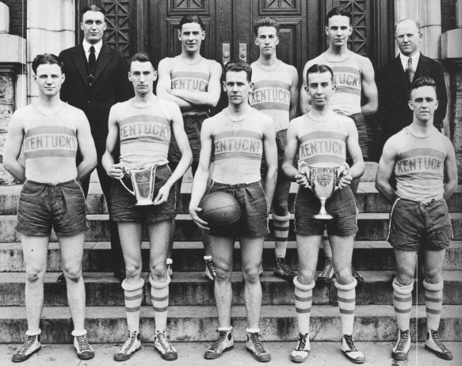

Kentucky Basketball History
Unknown photographer, Image courtesy BigBlueHistory
{kind=link}
Recent Seasons
| Season | Record | Accomplishments | Leading Scorer |
|---|---|---|---|
| 2015-16 | 27 - 9 | SEC Champs | Jamal Murray |
| 2014-15 | 38 - 1 | SEC Champs, Final Four | Aaron Harrison |
| 2013-14 | 29 - 11 | National Runner-up | Julius Randle |
| 2012-13 | 21-12 | N/A | Archie Goodwin |
| 2011-12 | 38-2 | SEC Champs, National Champs | Anthony Davis |
| 2010-11 | 29-9 | SEC Champs, Final Four | Brandon Knight |
| 2009-10 | 35-3 | SEC Champs, Elite Eight | John Wall |
Data courtesy ESPN
Top Scorers
| Player | Season | Statistics | ||
|---|---|---|---|---|
| Games | FG % | Points | ||
| 1. Dan Issel | 1967-68 | 27 | 43.85 | 444 |
| 1968-69 | 28 | 53.37 | 746 | |
| 1969-70 | 28 | 55.32 | 948 | |
| TOTAL | 83 | 51.85 | 2138 | |
| 2. Kenny Walker | 1982-83 | 31 | 61.11 | 227 |
| 1983-84 | 34 | 55.52 | 422 | |
| 1984-85 | 31 | 55.91 | 710 | |
| 1985-86 | 31 | 58.17 | 721 | |
| TOTAL | 132 | 57.13 | 2080 | |
| 3. Goose Givens | 1974-75 | 31 | 49.41 | 292 |
| 1975-76 | 30 | 49.19 | 602 | |
| 1976-77 | 30 | 51.42 | 566 | |
| 1977-78 | 32 | 55.35 | 578 | |
| TOTAL | 123 | 51.47 | 2038 | |
| 4. Keith Bogans | 1999-00 | 33 | 40.71 | 411 |
| 2000-01 | 34 | 47.3 | 577 | |
| 2001-02 | 32 | 39.45 | 371 | |
| 2002-03 | 36 | 45.75 | 564 | |
| TOTAL | 135 | 43.74 | 1923 | |
Data courtesy The Kentucky Basketball Statistics Project